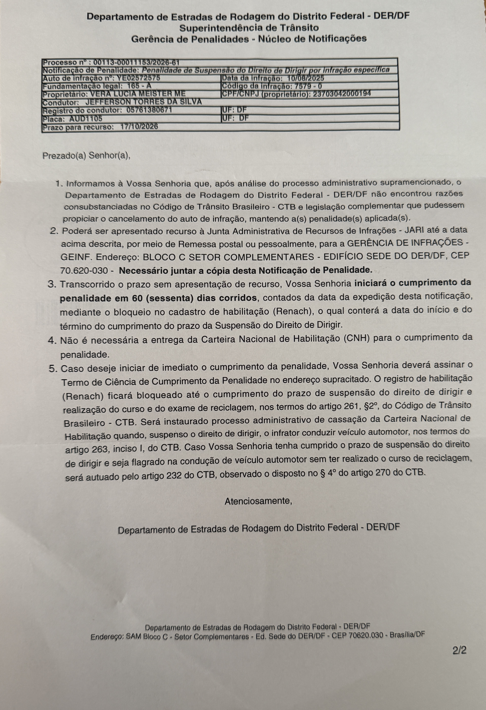

Recurso administrativo — Auto de Infração nº YE02572575
À autoridade competente do DER/DF
Jefferson Torres da Silva, pessoa física sob o número 035.856.601-00 brasileiro e brasiliense, solteiro, médico e empresário, também já qualificado nos autos do Auto de Infração nº YE02572575, vem, respeitosamente, apresentar RECURSO ADMINISTRATIVO, pelos fundamentos a seguir.
1. Da abordagem e da insuficiência dos elementos informados ao condutor
A abordagem ocorreu em 10/08/2025, pela manhã, em feriado de Dia dos Pais, quando o recorrente conduzia seu veículo acompanhado de três senhoras de idade, em deslocamento por via de trânsito tranquilo.
Durante a abordagem, o agente não se apresentou adequadamente, não esclareceu a natureza da fiscalização, não informou ao condutor qual procedimento estava sendo realizado, tampouco forneceu qualquer informação acerca do equipamento supostamente utilizado, limitando-se, na prática, a solicitar que o condutor abaixasse o vidro e soprasse um canudo.
Não houve esclarecimento sobre marca, modelo, identificação ou condições metrológicas do equipamento, nem demonstração, no momento da abordagem, de qualquer circunstância objetiva que permitisse ao condutor compreender a natureza e a finalidade do procedimento que lhe era solicitado. Questionado sobre as alternativas, o agente se limitou a dizer que era obrigatória a realização do procedimento.
A questão é relevante porque a atuação administrativa sancionatória não se resume à existência abstrata de poder de fiscalização: o auto deve conter a identificação da autoridade, agente ou equipamento que comprovar a infração, e a própria infração deve ser comprovada por meio legalmente admitido e previamente regulamentado.
2. Da ausência de elementos concretos que individualizem a situação fiscalizada
Não se pretende sustentar que a inexistência de sinais de alteração psicomotora, isoladamente, afaste a infração prevista no art. 165-A do CTB.
O que se questiona é a consistência concreta do procedimento administrativo.
O contexto da abordagem — veículo conduzido em circunstâncias ordinárias, em feriado, com três passageiras idosas e em rota de trânsito tranquilo — não constitui prova de qualquer ilícito, mas torna particularmente relevante esclarecer qual era a finalidade específica da averiguação e quais elementos objetivos determinaram a forma pela qual ela foi realizada.
Se o Estado pretende impor sanção administrativa de elevada gravidade a partir da recusa a determinado procedimento, é indispensável que o processo permita verificar o que foi efetivamente solicitado, por quem, mediante qual procedimento, com qual equipamento e em quais circunstâncias.
3. Da evolução normativa e da necessidade de interpretação favorável diante da dúvida objetiva
A regulamentação atualmente vigente do CONTRAN, por meio da Resolução nº 1.031/2026, passou a distinguir expressamente a triagem da efetiva constatação da infração, admitindo o pré-teste ou teste passivo justamente como procedimento de orientação, cujo resultado é exclusivamente indicativo e não pode, isoladamente, fundamentar autuação. A mesma regulamentação passou a disciplinar expressamente o reteste quando fatores técnicos ou operacionais possam comprometer o resultado, inclusive pela presença de álcool residual no trato respiratório superior.
É certo que a Resolução nº 1.031/2026 é posterior aos fatos e não se pretende sua aplicação retroativa.
Entretanto, sua edição constitui elemento interpretativo relevante: o próprio regime administrativo atualmente reconhece que circunstâncias técnicas ou operacionais podem interferir na aferição e que a fiscalização deve distinguir uma indicação inicial de uma efetiva constatação probatória.
Ora, se o próprio Estado vem adiante revelar que o teste do chamado “bafômetro” incorria em possíveis interpretações distorcidas, o requerente, cidadão, tem também o direito de arguir a mesma linha de raciocínio em sede administrativa.
Não se mostra juridicamente adequado, portanto, interpretar a atividade sancionatória de forma a maximizar a punição quando existem dúvidas objetivas sobre a regularidade e a suficiência do procedimento realizado.
Em matéria administrativa sancionatória, a dúvida razoável quanto à regularidade do procedimento e à consistência do conjunto probatório deve ser solucionada sem ampliar, por presunção, o poder punitivo estatal em detrimento do administrado.
4. Da ausência de acesso integral aos elementos do processo
Outro aspecto especialmente relevante é a impossibilidade de acesso integral ao procedimento administrativo.
Ao consultar o andamento, o recorrente não consegue visualizar o conteúdo dos documentos que teriam fundamentado a autuação ou seu posterior processamento, encontrando apenas registros de encaminhamento entre unidades administrativas.
Assim, o administrado é colocado na situação paradoxal de ter de exercer plenamente seu direito de defesa sem acesso integral aos próprios elementos utilizados pela Administração para sustentar a penalidade.
A situação é particularmente grave porque o recorrente necessita verificar, entre outros pontos:
- Eventual termo ou registro de sinais de alteração da capacidade psicomotora;
- Identificação do agente responsável pela abordagem;
- Identificação do equipamento utilizado;
- Documentação relativa ao equipamento;
- Eventuais registros, imagens ou vídeos da abordagem;
- Documentos relativos às medidas administrativas registradas;
- Decisões administrativas já proferidas;
- Fundamentos utilizados para eventual indeferimento da defesa prévia.
Sem esses elementos, a defesa fica limitada àquilo que consta superficialmente do sistema, não sendo possível exercer contraditório substancial sobre o conjunto probatório.
5. Da demora administrativa incompatível com a finalidade do procedimento
A defesa prévia foi apresentada tempestivamente e, apesar disso, o recorrente permaneceu por mais de um ano aguardando a análise administrativa, sem que tivesse acesso claro à decisão ou ao conteúdo integral do processamento.
O lapso temporal é particularmente relevante porque o processo administrativo de trânsito não existe apenas para produzir uma penalidade ao final de período indefinido. O próprio CTB estrutura uma sequência procedimental de autuação, defesa, julgamento e recurso, estabelecendo mecanismos e prazos destinados a assegurar a regularidade do processo. O art. 282, por exemplo, condiciona a aplicação da penalidade ao indeferimento da defesa prévia ou à sua não apresentação, enquanto o art. 285 disciplina o recurso contra a penalidade.
A demora excessiva, além de prejudicar concretamente o exercício da defesa — especialmente pela dificuldade crescente de reconstrução dos fatos e obtenção de elementos probatórios — enfraquece a própria finalidade da atuação administrativa, que deve guardar relação temporal minimamente razoável com o fato que pretende sancionar.
Não é lógico nem racional ao Estado punir, anos depois, uma infração presumida em que o suposto infrator teve a defesa cerceada desde a abordagem.
Não se trata simplesmente de alegar que todo decurso de tempo extingue automaticamente a pretensão administrativa. Trata-se de reconhecer que a Administração não pode transformar a morosidade do próprio procedimento em fator de prejuízo ao administrado, especialmente quando este apresentou defesa tempestiva e permaneceu aguardando sua apreciação.
6. Da necessidade de controle da consistência do auto
O art. 281 do CTB atribui expressamente à autoridade de trânsito o dever de julgar a consistência do auto de infração, determinando seu arquivamento quando considerado inconsistente ou irregular.
No presente caso, existem questões objetivas que impedem que a autuação seja examinada apenas a partir da presunção abstrata de legitimidade do ato administrativo:
- Abordagem sem adequada identificação e esclarecimento do procedimento ao condutor;
- Ausência de informação sobre o equipamento utilizado;
- Inexistência, ao menos nos elementos atualmente acessíveis ao recorrente, de documentação suficiente para reconstrução da fiscalização;
- Ausência de acesso integral ao processo administrativo;
- Inconsistências anteriormente apontadas quanto às medidas administrativas registradas;
- E demora superior a um ano para apreciação da defesa apresentada.
Diante desse conjunto, mostra-se indispensável que a Administração examine efetivamente a regularidade e consistência do auto, e não apenas a ocorrência formal da recusa.
7. Da ausência de motivação adequada da decisão administrativa
A decisão ora impugnada informa que, após análise do processo administrativo, o Departamento de Estradas de Rodagem do Distrito Federal – DER/DF concluiu que “não foram encontradas razões consubstanciadas no Código de Trânsito Brasileiro – CTB e legislação complementar que pudessem propiciar o cancelamento do auto de infração”, mantendo, por consequência, a penalidade aplicada.
Todavia, com a devida vênia, a fundamentação apresentada não atende ao dever de motivação dos atos administrativos, uma vez que não explicita, de forma clara, concreta e congruente, quais foram os fundamentos fáticos e jurídicos utilizados pela Administração para afastar os argumentos apresentados pelo recorrente.
A Lei Federal nº 9.784/1999, aplicável aos processos administrativos no âmbito do Distrito Federal por força da Lei Distrital nº 2.834/2001, estabelece, em seu art. 50, que os atos administrativos deverão ser motivados, com indicação dos fatos e dos fundamentos jurídicos, especialmente quando negarem, limitarem ou afetarem direitos ou interesses, quando impuserem ou agravarem deveres, encargos ou sanções, bem como quando decidirem recursos administrativos. O §1º do mesmo dispositivo estabelece que a motivação deve ser explícita, clara e congruente.
No caso concreto, entretanto, a decisão limita-se a afirmar que não foram encontradas “razões consubstanciadas no Código de Trânsito Brasileiro e legislação complementar” capazes de ensejar o cancelamento da penalidade.
Não foram indicados, contudo, quais argumentos apresentados pelo recorrente foram analisados, quais fatos constantes dos autos foram considerados pela Administração, quais dispositivos legais foram concretamente aplicados ao caso e, principalmente, por quais razões jurídicas e fáticas tais argumentos foram rejeitados.
A simples referência genérica ao Código de Trânsito Brasileiro e à legislação complementar não se confunde com a efetiva motivação do ato administrativo.
A motivação não se satisfaz com a mera indicação abstrata de normas jurídicas. É necessário que exista uma relação lógica entre os fatos concretamente apurados no processo, os argumentos apresentados pelo administrado, os dispositivos legais aplicados e a conclusão administrativa adotada.
Nesse sentido, o Superior Tribunal de Justiça reconhece que o dever de motivação exige a indicação dos fundamentos de fato e de direito que sustentam o ato administrativo, ressaltando que a motivação deve permitir a compreensão da correlação entre os fatos considerados pela Administração e a providência adotada.
Também é entendimento do STJ que a indicação genérica da causa do ato não é suficiente para atender ao dever de motivação, devendo os motivos ser apresentados de forma explícita, clara e congruente.
A deficiência de fundamentação assume especial relevância no presente caso porque a decisão administrativa mantém penalidade que restringe o direito de dirigir do recorrente, produzindo consequência jurídica concreta e gravosa.
Além disso, a ausência de motivação suficiente prejudica diretamente o exercício do contraditório e da ampla defesa, pois o administrado precisa conhecer as razões efetivamente adotadas pela Administração para que possa impugná-las de maneira específica.
Não é suficiente, portanto, afirmar que a Administração “não encontrou razões” para cancelar a penalidade. É indispensável demonstrar por que as razões apresentadas pelo administrado não foram acolhidas.
A propósito, o próprio art. 50, §1º, da Lei nº 9.784/1999 admite que a Administração adote como motivação os fundamentos de pareceres, informações, decisões ou propostas anteriores, desde que os incorpore ao ato decisório. O que não se verifica na notificação em questão, uma vez que não há indicação de parecer, relatório ou manifestação técnica/jurídica cujos fundamentos tenham sido expressamente adotados como razão de decidir.
Dessa forma, requer-se o reconhecimento da insuficiência da motivação apresentada na decisão administrativa, com a consequente revisão/anulação da decisão, para que seja proferida nova decisão devidamente fundamentada, com a apreciação individualizada dos argumentos apresentados pelo recorrente e a indicação dos respectivos fundamentos fáticos e jurídicos.
Diante do exposto, requer seja reconhecida a ausência/insuficiência de motivação da decisão administrativa impugnada, diante da inobservância do art. 50, incisos I, II e V, e §1º, da Lei Federal nº 9.784/1999, aplicável ao Distrito Federal por força da Lei Distrital nº 2.834/2001, determinando-se a prolação de nova decisão administrativa, na qual sejam expressamente indicados os fundamentos fáticos e jurídicos utilizados para afastar cada um dos argumentos apresentados pelo recorrente, bem como a relação entre os fatos constantes dos autos e a penalidade mantida.
8. Da desorganização sistemática do DER
Às 10h do dia 14 de outubro de 2026, ao tentar protocolar este recurso em tela via sistema RADAR, como instruído pelos sites oficiais do DER/DETRAN, o usuário encontra data de vencimento do prazo de recurso divergente da notificação física recebida por Correios, como abaixo consta na íntegra. Aquela, informa vencimento do direito em 05/10 e esta em 17/10, ambos do atual ano de 2026.

De tal maneira, resta uma via de defesa parcialmente cerceada, porque a informação publicamente disponibilizada pelos órgãos são conflitantes e levam a crer que é findado o defeso. A via eletrônica dos recursos conversa com o princípio constitucional da eficiência, regra do artigo 37, fundamental e necessária, uma vez que o interesse público sempre insiste na maneira mais eficiente, do ponto de vista do cidadão, da execução dos serviços públicos.
Cabe, assim, retorno de justificativa ao usuário e ponderação na atividade punitiva, uma vez que, em caso divergente, o prazo a se considerar deveria sempre ser o mais dilatado, justamente no sentido de evitar prejuízo ao direito de defesa e não o contrário. Há, ainda, de se imaginar quantos penalizados por processo similar desistiram de defesa pelo encurtado prazo do sistema RADAR que é divulgado por órgãos oficiais como meio lícito recursal.
Ainda, nesta seara, cabe destacar que a informação divergente de prazos importa ao direito penalizado porque o efeito suspensivo o considera, como reza o CTB:
Art. 285. O recurso contra a penalidade imposta nos termos do art. 282 deste Código será interposto perante a autoridade que imputou a penalidade e terá efeito suspensivo.
9. Pedidos
Diante do exposto, requer:
- a) o conhecimento e provimento do presente recurso, com o cancelamento da penalidade e arquivamento do Auto de Infração nº YE02572575, nos termos do art. 281, §1º, I, do CTB;
- b) subsidiariamente, caso não seja esse o entendimento, seja assegurado ao recorrente acesso integral aos autos e a todos os elementos que fundamentaram a autuação e seu processamento, inclusive documentos, termos, registros, imagens, vídeos, informações relativas ao equipamento e decisões administrativas;
- c) após disponibilização integral dos autos, seja realizada nova análise da consistência da autuação, com apreciação individualizada dos argumentos apresentados;
- d) que eventual decisão seja expressamente fundamentada, enfrentando os pontos objetivos suscitados neste recurso, especialmente a regularidade do procedimento de abordagem, a identificação do equipamento, a documentação da fiscalização, a ausência de acesso integral aos autos e a demora na apreciação da defesa prévia.
- e) que seja considerado tempestivo o atual recurso, como observado o prazo explícito da notificação entregue pelos Correios do Brasil.
- f) que a Administração, na sua figura o DER, se posicione publicamente sobre as divergências de prazos recursais expostas e, pelo interesse público difuso, levante campanha ampla informando sobre tal situação para que o benefício seja difundido e não preservado entre partes neste processo administrativo.
- g) que até reanálise do recurso anterior conforme pedido em “c” e, até decisão deste recurso, mantenha-se efeito suspensivo de prazos e punições pretendidas, conforme artigo 285 do CTB.
Termos em que, pede deferimento.
Brasília, 15 de outubro de 2026.
Jefferson Torres da Silva